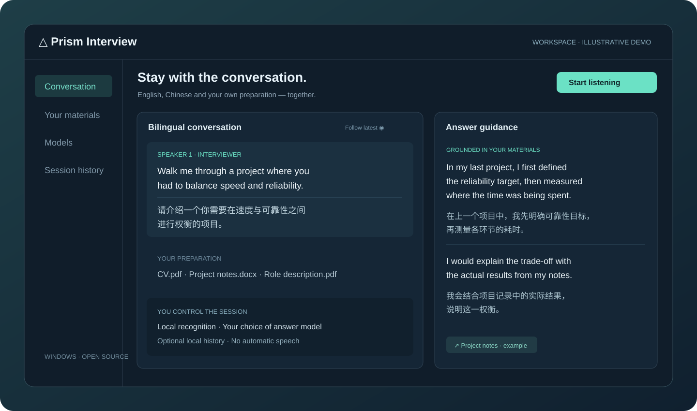

Read naturally
Paired English and Chinese, complete text, optional follow-latest and a transparent floating overlay.
Stay present in your English interview. Read paired translations and shape better answers with your own preparation materials.
Windows x64 · Preview release · Bring your own model access
Walk me through a project where you had to balance speed and reliability.
请介绍一个你需要在速度与可靠性之间进行权衡的项目。
“I first defined the reliability target, then measured where the time was being spent.”
“我先明确可靠性目标，再测量各环节的耗时。”
↗ Project notes.docx · exampleEnglish and Chinese stay together. Move, resize or float the panels to fit your screen — and the way you think.

Illustrative content. No real candidate information is shown.
Paired English and Chinese, complete text, optional follow-latest and a transparent floating overlay.
Bring your CV, slides and notes. Retrieve relevant excerpts instead of starting each answer from scratch.
Choose manual or optional automatic local saving. Review and export sessions without saving raw audio.
Separate workers keep captions and answers moving independently. Choose the tools that fit your hardware and privacy needs.
WASAPI loopback captures the playback device you choose. Whisper recognizes English locally. Use an installed local translator or explicitly enable a cloud translation service.
Read the setup guide →No automatic capture on launch. Fresh settings, no shared keys, and optional conversation saving that starts off.
Cloud answers send questions and selected excerpts. Cloud captions require separate consent. Providers may charge for usage.
Translation and AI suggestions can be wrong. Review claims, follow interview rules, and test your own setup before relying on it.